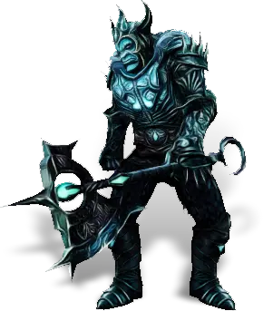

Открыть в интерактивной вики →

| Уровень | лёгк. 105 / норм. 105 / тяжел. 135 |
|---|---|
| Зоны атаки | ближняя, дальняя, ментальная |
| Шанс дропа 100% — уровни | лёгк. 1-80 / норм. 1-80 / тяжел. 1-110 |
| Шанс дропа 90% — уровни | лёгк. 81-100 / норм. 81-100 / тяжел. 111-140 |
| Шанс дропа 70% — уровни | лёгк. 101+ / норм. 101+ / тяжел. -- |
| Группа боссов | Тревога |
| Сила (PvE) | норм. 5580 / тяжел. 8186 |
| Аспект арены | Hegun |
| Здоровье | лёгк. 5000/5300 / норм. 5000/5300 / тяжел. 8100/8600 |
| Мана | 4600/4800 |
| Выносливость | 4600/4800 |
Навыки
Зависит от класса игрока